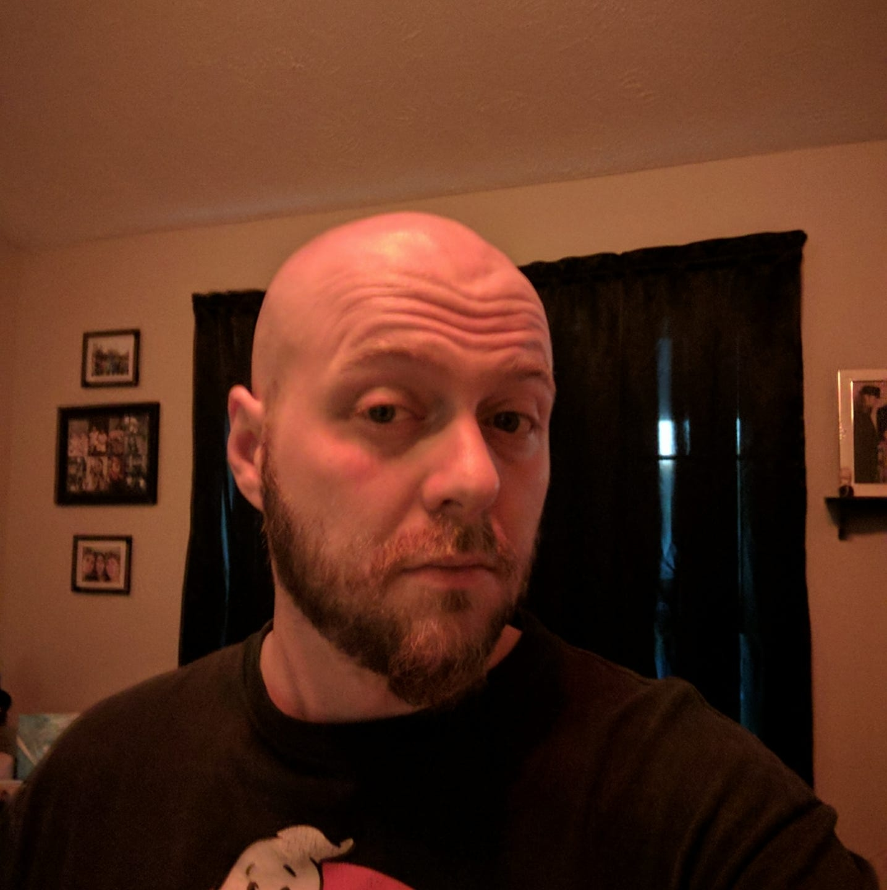

James Robbins
I was born in the town of Muncy, PA. I moved to TN when I was 8 years old. I started playing guitar when I was 10 and have learned other instruments throughout the years. I went to school for Audio Engineering and graduated with an Associates Degree. In 2016, I released my first ever album "Last Words" that I wrote/recorded/and engineered at home. I started collecting retro and modern video games about 5 years ago, and started creating my own Youtube videos talking about my collection and random other shenanigans.